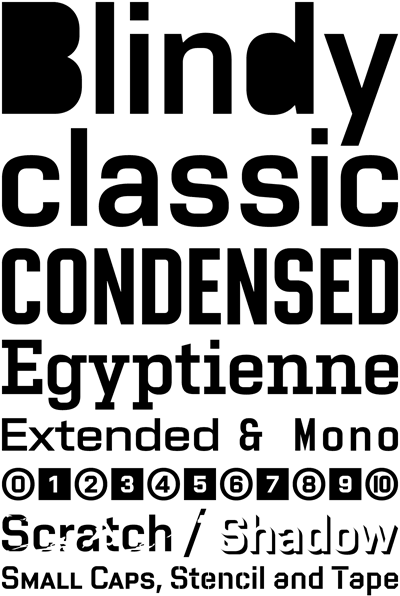

Vafle
Na přelomu let 2005/2006 jsme se rozhodli redesignovat písmo Wafle Two. Nutné byly drobné korekce proporcí a duktů u verzálek, minusek i číslic. Znakovou sadu jsme doplnili o chybějící glyfy a akcentované znaky pro běžné latinkové jazyky. Výsledkem je nová Vafle.
Krátce po svržení komunistického režimu v ateliéru Písma na Vysoké škole umělecko-průmyslové v Praze graduje výrazná revoluční atmosféra. Devadesátá léta jsou ve znamení boření klasického písmového návrhu. Stavba samotného písma přestává podléhat tradičním proporcím a pokud se nejedná vyloženě o samonosné konstrukce, stává se pouze kostrou pro vyprávení příběhů. Na jedné straně se autoři snaží uchopit, přeložit a interpretovat uvolněnou atmosféru osmdesátych let zastoupenou Davidem Carsonem či Nevillem Brodym, na druhé vrcholí zběsilý závod o aplikaci čehokoliv, co autory v běžném životě obklopuje, do formy aspoň trochu připomínající písmové znaky. Většina z těchto písem, pokud je autoři nepoužili na další autorské projekty, se objevuje pouze na klauzurních plakátech. Jejich jepičí život končí.
Jednou z platforem, kde některá tato písma dostávala možnost uplatnění, byl časopis Živel. V šestém čísle z jara roku 1997 se poprvé objevuje písmo Marka Pistory Vafle. Inspirace skrytá v názvu je jednoduše přímočará. Toto písmo vzniklo digitalizací insignií z taktického označení letadel Luftwaffe, které původně pravděpodobně podléhalo některé z Deutsche Industrie-Norm. Písmo neosobní, stroze účelové, nehezké. Touto transkripcí vznikly dvě verze písma: Vafle kulatá a Vafle hranatá.
V roce 2001 se Marek stává art directorem časopisu Reflex, klestí se rozbujelými typografickými kreacemi a nastoluje typickou pistorovskou diktaturu jednoduchých ploch a geometrických segmentů. Prostor pro titulkové písmo dostává nová Wafle Two a posléze Wafle Stencil, která je jakousi konverzí původního ducha Vafle. Průmětem obou principů vznikl grotesk obdélníkového obrazu s příjemným zakulacením obloučitých tvarů. Písmo už obsahuje minusky, proporce znaků je poměrně vyrovnaná, zachovány jsou typické naschvály. Během pěti let na stránkách Reflexu dostatečně demonstruje jednoduchou důraznost a vytváří nezamněnitelný výraz tohoto časopisu.
Na přelomu let 2005/2006 jsme se rozhodli redesignovat písmo Wafle Two. Nutné byly drobné korekce proporcí a duktů u verzálek, minusek i číslic. Znakovou sadu jsme doplnili o chybějící glyfy a akcentované znaky pro běžné latinkové jazyky. Výsledkem je nová Vafle™ Classic. Také šablonová Vafle™ Stencil přebírá nové a doplňené tvarosloví. Písmová rodina je ale doplňená ještě o pár dalších řezů. Vafle™ Blindy má zaslepené vnitřní plochy, Vafle™ Scratch je patinovaná škrábancy. Vafle™ Shadow hází elegantní stínek a je možno ji používat samostatně i podtiskovat pod znaky Vafle™ Classic. Vafle™ Mono je monospace verzí s neproporčními šířkami všech znaků, Vafle™ Tape má nahrazeny obloučité tvary diagonálami a působí dojmem znaků z překládaných pásek. Vafle™ Small Caps obohacuje sadu malými kapitálkami stejné střední výšky jako minusky. Vafle™ Condensed a Vafle™ Extended jsou, jak jinak, zůženou a rozšířenou variantou. Vafle™ Egyptienne s hutnými serify je patkovou variantou tohoto grotesku. Šipky, rámečky a další glyfy jsou obsaženy v řezu Vafle™ Picto.
Set Vafle™ je skvělou příležitostí pro tvorbu časopisů, knižních obálek, plakátů nebo celých korporátních systémů.